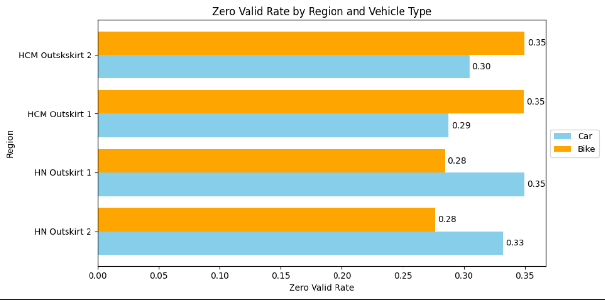
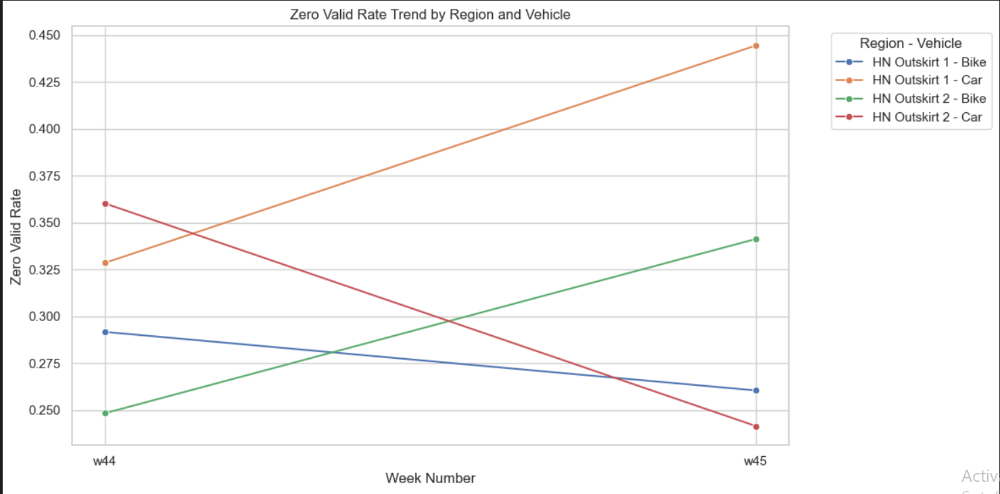

OVERVIEW
In Vietnam, especially in Ho Chi Minh City, ride-hailing apps play a vital role in making transportation faster and more convenient. With high demand for comfort and efficiency, the Dispatch Product team introduced the Forward Dispatch Engine to improve coverage in low-density areas and reduce zero-request rates.
Unlike legacy systems that assign drivers only after a ride is confirmed, Forward Dispatch proactively matches users with nearby drivers finishing trips soon. This approach reduces wait times, increases driver utilization, and enhances user experience without sacrificing quality.
OBJECTIVES
The goal of this project is to evaluate the performance and business impact of the Forward Dispatch Engine. Specifically, the analysis focuses on:
- Zero Session Analysis – Identify and measure scenarios where no drivers were available for user requests.
- Coverage Opportunity Estimation – Assess how Forward Dispatch expands service availability in low-density areas.
- Cancellation & Risk Monitoring – Track cancellation patterns and potential risks that may affect user experience or driver efficiency.
- Recommendation Development – Provide actionable insights to optimize dispatch strategies and improve overall product performance.
DATASET
The analysis was conducted using four key datasets that capture user sessions, driver availability, ride requests, and cancellations. These datasets provide a comprehensive view of rider–driver interactions and dispatch performance.
ASSUMPTION
Assumptions made during analysis include:
- Data is complete and accurately represents business transactions.
- Seasonality effects are consistent year over year.
- No major changes occurred in product definitions or categories.
ANALYSIS AND INSIGHTS
a. Zero Session Analysis
-
Zero Valid Rate: Calculated for Bike and Car transport across different outskirts.

Insight:
Cars in Hanoi outskirts have a higher zero valid rate than bikes.
Bikes in Ho Chi Minh outskirts have a higher zero valid rate than.
-
Identify trends over weeks: Calculated for Bike and Car transport across different outskirts over week.

Insight: Not see any pattern for Hanoi outskirts.
b. Coverage Opportunity Estimation
-
Range 1 vs Range 2: Simulate valid and potential sessions for Bike and Car.

Insight: Bikes perform better in shorter ranges, while cars dominate in longer ranges.
-
Conversion Rates: Estimate how many zero sessions could realistically be covered weekly.

Insight: Around 25% of zero sessions can be converted with better allocation.
c. Cancellation & Risk Monitoring
-
Cancellation Rates: Compare rider and driver cancellations (legacy vs forward dispatch).

Insight: Forward Dispatch reduced driver cancellations but slightly increased rider cancellations.
-
ETA & Accept Distance: Estimate changes with Forward Dispatch.

Insight: ETA increased by ~30s, accept distance grew by 200m.
-
Thresholds: Suggest acceptable thresholds based on trade-offs.

Insight: A balance of ≤10% cancellation and ≤1min ETA increase is optimal.